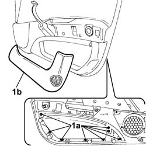
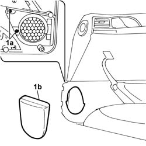
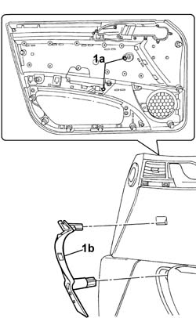
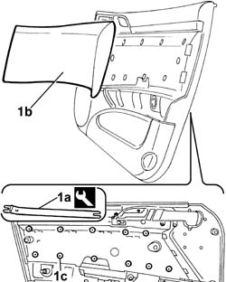
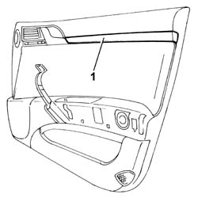

7005E84 Front door inner panel element (one), left or right - R.R. with panel removed
- Path
- Procedures > 70 FITTINGS > 7005 passenger compartment front side doors > 7005E FRONT DOOR TRIM > 7005E84 Front door inner panel element (one), left or right - R.R. with panel removed
- Kind
- repair procedure (removal / refitting; the operation number is the code)
- Applies to
- all engines; all production periods
- Interactive page
- https://sloeber94.github.io/elrnDB-lThss/en/#/109145
Applies to: all engines; all production periods
 Removing
Removing
 Refitting
Refitting- Carry out the operations described below to remove the oddments pocket.
1. Undo the bolts (1a) and remove the oddments pocket (1b).

Applies to: all engines; all production periods
- Carry out the operations described below to remove the radio system grille.
1. Undo the bolts (1a) and remove the radio system grille (1b) on the panel.

Applies to: all engines; all production periods
- Carry out the operations described below to remove the grab handle.
1. Undo the bolts (1a) and remove the grab handle (1b).

Applies to: all engines; all production periods
- Carry out the operations described below to remove the inner panel trim.
1. Undo the bolts (1a) and remove the grab handle (1b).
Applies to: all engines; all production periods
1. Release the trim (1b) from the retaining springs (1c) using the tool (1a).
 | Description | Code | Function |
|---|---|---|---|
1a | Knife | 1.878.077.000 | Removing front door panel cover |

Applies to: all engines; all production periods
- Carry out the operations described below to remove the inner panel moulding.
1. Release the moulding and remove it.

Applies to: all engines; all production periods
Refitting
Removing- To fit the oddments pocket, position the component and secure it using the bolts.
- To fit the grab handle, position the component and secure it using the bolts.
- To fit the inner panel trim, position the component and secure it using the bolts, then fit the handle securing it with the bolts.
- To fit the moulding, fit the component in the housing until the click of the retaining springs can be heard.